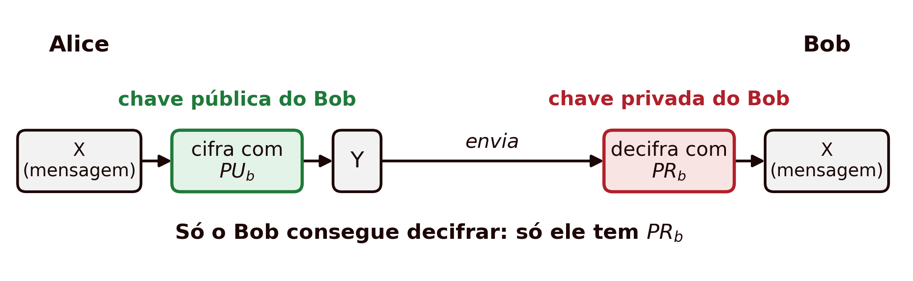
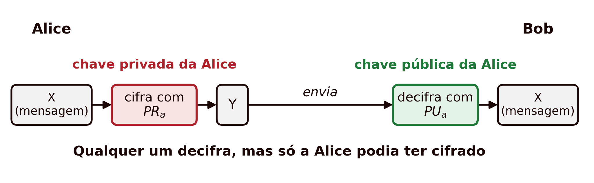
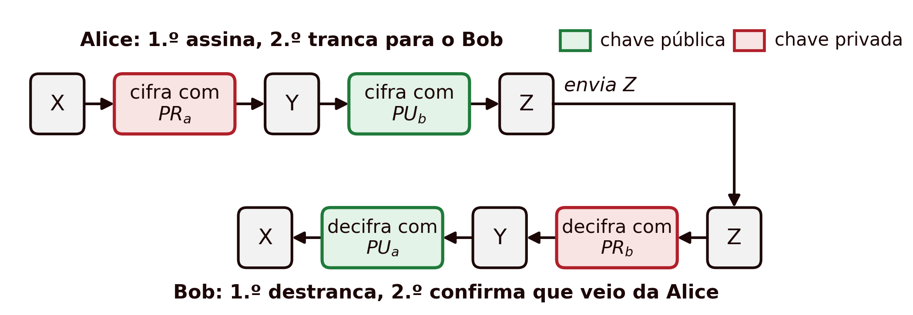
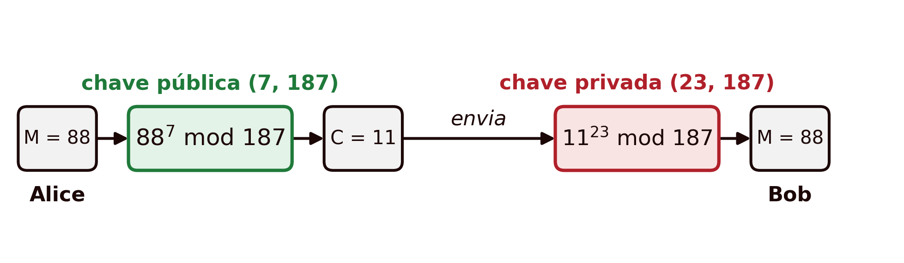
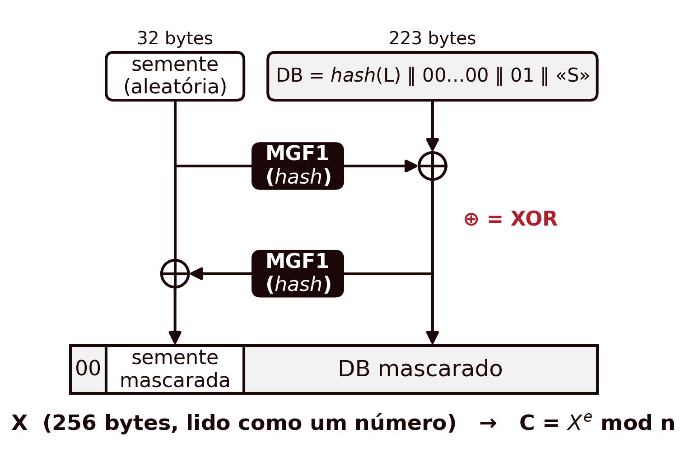
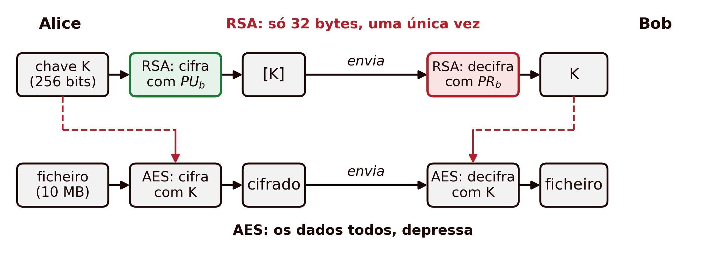

6 Criptografia Assimétrica e RSA
Introdução
As cifras simétricas, das cifras clássicas ao AES, e também o HMAC, partilham uma limitação estrutural: exigem uma chave secreta partilhada previamente entre emissor e recetor. Suponha-se que a Alice, em Vila Real, quer enviar ao Bob, em Lisboa, um ficheiro cifrado com AES:
- O AES precisa de uma chave \(K\) que os dois conheçam.
- Se a Alice enviar \(K\) pela Internet, sem proteção, um atacante (o Darth) lê-a pelo caminho.
- Para cifrar \(K\), a Alice precisaria de outra chave, já combinada com o Bob, e o problema repete-se.
- Encontrarem-se pessoalmente não escala: numa empresa com 1000 pessoas, cada par precisa da sua própria chave, ou seja, \(1000 \times 999 / 2 = 499\,500\) chaves.
Este é o problema da distribuição de chaves, e durante décadas não teve resposta satisfatória. A solução, proposta por Diffie e Hellman em 1976 e concretizada por Rivest, Shamir e Adleman em 1977 com o algoritmo que dá nome a este capítulo, é radical: em vez de uma chave partilhada, cada participante passa a ter duas chaves matematicamente relacionadas, uma que pode divulgar livremente e outra que nunca revela a ninguém.
6.1 Criptografia Assimétrica: o Conceito
Uma analogia ajuda a perceber a ideia. O Bob compra muitos cadeados iguais e distribui-os abertos a quem os pedir, mas guarda só para si a chave que os abre. A Alice mete a mensagem numa caixa e fecha-a com um dos cadeados do Bob: para fechar basta carregar, não é precisa chave nenhuma. Depois de fechada, nem a própria Alice consegue abrir a caixa; só o Bob.
Na criptografia assimétrica, o cadeado aberto é a chave pública (\(PU\)), que se divulga a toda a gente, e a chave do cadeado é a chave privada (\(PR\)), que nunca sai do dono. Um sistema de chave pública assenta em seis componentes (Stallings 2020):
| Componente | Papel |
|---|---|
| Texto claro \(X\) | a mensagem original |
| Algoritmo de cifragem \(E\) | transforma \(X\) usando uma das chaves |
| Texto cifrado \(Y\) | o que viaja pela rede |
| Algoritmo de decifragem \(D\) | recupera \(X\) usando a outra chave |
| Chave pública \(PU\) | conhecida por todos |
| Chave privada \(PR\) | conhecida só pelo dono |
A propriedade que torna isto útil é puramente matemática: o que se cifrar com uma das chaves de um par só se decifra com a outra, nunca com a mesma. Na notação usada a seguir, \(PU_b\) e \(PR_b\) são as chaves do Bob, e \(PU_a\) e \(PR_a\) as da Alice. Escolher que chave usar para quê dá origem a dois esquemas distintos, com propósitos opostos.
Confidencialidade. Para enviar uma mensagem confidencial ao Bob, a Alice cifra-a com a chave pública do Bob (\(PU_b\)), que qualquer pessoa conhece:
\[Y = E[PU_b, X] \qquad X = D[PR_b, Y]\]

Só o Bob consegue decifrar \(Y\), porque só ele tem \(PR_b\). O Darth também conhece \(PU_b\), mas com ela não consegue desfazer a cifragem. Isto resolve exatamente o problema identificado na introdução: a Alice nunca precisou de combinar nenhum segredo com o Bob, só precisou de conhecer uma chave que está à vista de todos.
Autenticação. Para provar que uma mensagem vem mesmo da Alice, as chaves trocam de papel: ela cifra-a com a sua própria chave privada (\(PR_a\)):
\[Y = E[PR_a, X] \qquad X = D[PU_a, Y]\]

Qualquer pessoa pode decifrar \(Y\) com a chave pública da Alice, \(PU_a\), que também é livremente conhecida, e é precisamente por isso que este esquema não dá confidencialidade nenhuma. O que dá é a garantia de quem enviou: se \(PU_a\) decifra \(Y\), então \(Y\) foi produzido com \(PR_a\), e só a Alice a possui. É esta a ideia por trás da assinatura digital.
As duas ao mesmo tempo. Nada impede combinar os dois esquemas. A Alice primeiro cifra com a sua própria chave privada (assina) e depois cifra o resultado com a chave pública do Bob (garante a confidencialidade):
\[Z = E[PU_b,\, E[PR_a, X]] \qquad X = D[PU_a,\, D[PR_b, Z]]\]

Só o Bob consegue abrir \(Z\), e lá dentro encontra um \(Y\) que só a Alice podia ter produzido: fica com a certeza de que a mensagem veio da Alice e com a garantia de que mais ninguém a leu pelo caminho.
6.2 Categorias e Aplicações
Os algoritmos de chave pública têm três utilizações possíveis:
- Cifrar e decifrar, para obter confidencialidade;
- Assinatura digital, para provar quem produziu uma mensagem;
- Troca de chaves, para que as duas partes fiquem a partilhar uma chave secreta (por exemplo, uma chave de AES).
Nem todos os algoritmos servem as três:
| Algoritmo | Cifrar/Decifrar | Assinatura Digital | Troca de Chaves |
|---|---|---|---|
| RSA | Sim | Sim | Sim |
| Curva Elíptica | Sim | Sim | Sim |
| Diffie-Hellman | Não | Não | Sim |
| DSS | Não | Sim | Não |
O RSA, apresentado neste capítulo, é, ao lado da criptografia de curva elíptica, capaz de servir os três papéis. O Diffie-Hellman serve apenas para combinar uma chave partilhada; o DSS existe apenas para assinar.
6.3 A Matemática Necessária
O RSA usa apenas três ideias de aritmética, apresentadas aqui antes do algoritmo.
O resto da divisão. \(a \bmod n\) é o resto da divisão inteira de \(a\) por \(n\). Um relógio faz isto: 14 horas são as 2 da tarde, porque \(14 \bmod 12 = 2\). Da mesma forma, \(200 \bmod 187 = 13\), porque \(200 = 1 \times 187 + 13\), e \(161 \bmod 160 = 1\), porque \(161 = 1 \times 160 + 1\). Uma consequência importante: o resultado de “\(\bmod\ n\)” está sempre entre \(0\) e \(n-1\), por maior que seja o número de partida.
Primos e números coprimos. Um número primo só é divisível por 1 e por si próprio (2, 3, 5, 7, 11, 13, 17, …). O máximo divisor comum, \(\text{mdc}(a, b)\), é o maior número que divide \(a\) e \(b\) ao mesmo tempo, e \(a\) e \(b\) dizem-se coprimos quando \(\text{mdc}(a, b) = 1\), ou seja, quando não partilham nenhum fator:
| Par | Fatores | mdc | Coprimos? |
|---|---|---|---|
| 6 e 160 | \(6 = 2 \times 3\); \(160 = 2^5 \times 5\) | 2 | Não |
| 7 e 160 | \(7\) é primo e não divide 160 | 1 | Sim |
O inverso modular. Na aritmética normal, o inverso de 3 é \(\frac{1}{3}\), porque \(3 \times \frac{1}{3} = 1\). Em aritmética módulo 160 não há frações: o inverso de 7 módulo 160 é o número inteiro \(d\) tal que
\[7 \times d \bmod 160 = 1\]
Procura-se, portanto, um múltiplo de 7 que fique uma unidade acima de um múltiplo de 160:
| \(d\) | 1 | 2 | … | 22 | 23 |
|---|---|---|---|---|---|
| \(7 \times d\) | 7 | 14 | … | 154 | 161 |
| \(7 \times d \bmod 160\) | 7 | 14 | … | 154 | 1 |
O inverso de 7 módulo 160 é 23. Este inverso só existe porque 7 e 160 são coprimos: com 6, que partilha o fator 2 com 160, os produtos \(6 \times d\) são sempre pares, e um número par menos um múltiplo de 160 nunca dá 1.
6.4 RSA: Geração de Chaves
O RSA (Rivest, Shamir e Adleman, 1977) continua a ser o algoritmo de chave pública mais usado na prática. A geração do par de chaves segue cinco passos:
- Escolhem-se dois números primos grandes e aleatórios, \(p\) e \(q\).
- Calcula-se o módulo \(n = p \times q\), que será público.
- Calcula-se \(\phi(n) = (p-1)(q-1)\), que tem de se manter secreto.
- Escolhe-se \(e\), coprimo com \(\phi(n)\), com \(1 < e < \phi(n)\).
- Calcula-se \(d\), o inverso de \(e\) módulo \(\phi(n)\): \(e \times d \bmod \phi(n) = 1\).
A chave pública é o par \((e, n)\); a chave privada é o par \((d, n)\). O módulo \(n\) é público, mas \(p\), \(q\) e \(\phi(n)\) nunca são divulgados: quem os conhecer consegue calcular \(d\).
Um exemplo completo, com números pequenos apenas para se conseguir fazer as contas à mão:
- \(p = 17\) e \(q = 11\).
- \(n = 17 \times 11 = 187\).
- \(\phi(n) = 16 \times 10 = 160\).
- \(e = 7\), porque \(\text{mdc}(7, 160) = 1\).
- \(d = 23\), porque \(7 \times 23 = 161\) e \(161 \bmod 160 = 1\) (Tabela 6.4).
A chave pública do Bob é \((7, 187)\) e a chave privada é \((23, 187)\).
6.5 RSA: Cifragem e Decifragem
No RSA, a mensagem é um número \(M\), entre \(0\) e \(n-1\); um texto converte-se em números, por exemplo, pelos códigos dos seus carateres. Cifrar e decifrar resume-se a uma exponenciação modular:
\[C = M^e \bmod n \qquad\qquad M = C^d \bmod n\]

No exemplo, a Alice cifra \(M = 88\) com a chave pública do Bob, \(C = 88^7 \bmod 187 = 11\), e o Bob decifra com a sua chave privada, \(M = 11^{23} \bmod 187 = 88\).
6.5.1 Calcular as Potências à Mão
\(88^7 = 40\,867\,559\,636\,992\) já é um número grande, e com expoentes de centenas de algarismos o cálculo direto seria impossível. O truque é reduzir módulo \(n\) a cada passo:
- Decompõe-se o expoente em potências de 2: \(7 = 4 + 2 + 1\), logo \(88^7 = 88^4 \times 88^2 \times 88^1\).
- \(88^1 \bmod 187 = 88\).
- \(88^2 = 7744\), e \(7744 \bmod 187 = 77\).
- \(88^4 = (88^2)^2\), logo basta calcular \(77^2 = 5929\), e \(5929 \bmod 187 = 132\).
- Multiplica-se tudo: \(132 \times 77 \times 88 = 894\,432\), e \(894\,432 \bmod 187 = 11\).
Os números intermédios nunca passam muito de \(187^2\). É assim que os computadores fazem, mesmo com \(n\) de milhares de bits, e o método chama-se exponenciação por quadrados sucessivos (square-and-multiply).
Para decifrar, o Bob faz o mesmo com o expoente \(d = 23 = 16 + 4 + 2 + 1\), elevando sempre ao quadrado o resultado anterior:
| Potência | \(11^1\) | \(11^2\) | \(11^4\) | \(11^8\) | \(11^{16}\) |
|---|---|---|---|---|---|
| \(\bmod 187\) | 11 | 121 | 55 | 33 | 154 |
\[11^{23} = 11^{16} \times 11^4 \times 11^2 \times 11^1 \;\rightarrow\; 154 \times 55 \times 121 \times 11 = 11\,273\,570, \qquad 11\,273\,570 \bmod 187 = 88\]
O Bob recuperou a mensagem da Alice.
6.5.2 Porque Volta a Dar 88?
Cifrar e decifrar seguidos é elevar a \(e\) e depois a \(d\):
\[(M^e)^d = M^{e \times d} = M^{161}\]
\(e\) e \(d\) foram escolhidos de modo que \(e \times d = 161 = 160 + 1\), ou seja, \(e \times d \bmod \phi(n) = 1\). Com \(n = 187\), elevar a 161 devolve sempre o número de partida, \(M^{161} \bmod 187 = M\):
| \(M\) | 2 | 5 | 88 |
|---|---|---|---|
| \(C = M^7 \bmod 187\) | 128 | 146 | 11 |
| \(C^{23} \bmod 187\) | 2 | 5 | 88 |
A propriedade verifica-se para todos os \(M\) de 0 a 186. A demonstração geral vem da teoria dos números (teorema de Euler) (Stallings 2020).
6.6 Segurança: Fatorizar \(n\)
No exemplo, o Darth conhece a chave pública, \(e = 7\) e \(n = 187\), o algoritmo RSA e o texto cifrado \(C = 11\). Não conhece \(d = 23\), nem \(p = 17\) e \(q = 11\), nem \(\phi(n) = 160\). A cadeia de dependências é a seguinte: para calcular \(d\), precisa de \(\phi(n)\); para calcular \(\phi(n) = (p-1)(q-1)\), precisa de \(p\) e \(q\); e para obter \(p\) e \(q\), tem de fatorizar \(n\), isto é, descobrir que primos, multiplicados, dão 187.
Com \(n = 187\), o ataque é imediato. O Darth divide 187 por cada primo, por ordem:
- \(187 \div 2\), \(187 \div 3\), \(187 \div 5\) e \(187 \div 7\): nenhuma divisão é exata.
- \(187 \div 11 = 17\): encontrou \(p = 17\) e \(q = 11\).
- Calcula \(\phi(n) = 16 \times 10 = 160\).
- Calcula o inverso de \(e = 7\) módulo 160: \(d = 23\).
- Decifra tudo o que for enviado ao Bob: \(11^{23} \bmod 187 = 88\).
Basta testar primos até \(\sqrt{187} \approx 13{,}7\), porque, se os dois fatores fossem maiores do que isso, o produto passaria de 187. São no máximo seis divisões (2, 3, 5, 7, 11 e 13). Qualquer \(n\) de 8 bits (menor do que 256) cai assim: a segurança é nula.
Na prática, \(n\) tem 2048 a 4096 bits, um número de 617 a 1234 algarismos. Os primos até \(\sqrt{n}\) são mais de \(10^{305}\), e testá-los um a um é impossível. Multiplicar \(p \times q\) é instantâneo, mas desfazer a multiplicação não tem nenhum método rápido conhecido: é o problema da fatorização de inteiros, do qual depende toda a segurança do RSA.
Isto não quer dizer que a fatorização só se faça por tentativa. Em 1991, a empresa RSA Laboratories publicou uma lista de módulos como desafio público, com nomes do tipo RSA-número de algarismos. O recorde atual é o RSA-250, com 250 algarismos (829 bits), fatorizado em 2020: um único processador levaria cerca de 2700 anos, e repartido por milhares de computadores demorou alguns meses. O melhor método conhecido, o General Number Field Sieve (GNFS), tem complexidade subexponencial: cresce mais lentamente do que uma pesquisa exaustiva, mas mais depressa do que um algoritmo polinomial (Stallings 2020). É a existência deste atalho, muito mais rápido do que tentar divisões, que obriga o RSA a usar chaves muito maiores do que as de uma cifra simétrica para o mesmo nível de segurança:
| Segurança equivalente (bits) | 112 (3DES) | 128 | 192 | 256 |
|---|---|---|---|---|
| Módulo RSA equivalente (bits) | 2048 | 3072 | 7680 | 15 360 |
6.7 Uma Chave RSA Real
O openssl gera e mostra um par de chaves RSA de 2048 bits:
$ openssl genpkey -algorithm RSA -pkeyopt rsa_keygen_bits:2048 -out bob.pem
$ openssl pkey -in bob.pem -text -noout
Private-Key: (2048 bit, 2 primes)
modulus:
00:da:2c:3c:33:c6:c3:1a:7d:7a:e2:cc:af:74:48: ...
publicExponent: 65537 (0x10001)
privateExponent:
61:44:4b:6a:c1:f8:85:bc:df:a6:71:9e:df:76:fa: ...
prime1:
00:ee:f1:6c:4f:11:2f:fd:f9:8e:ba:17:29:c6:93: ...
prime2:
00:e9:bf:3e:ad:10:df:07:59:b3:ff:48:88:88:b0: ...| Comando ou campo | Significado |
|---|---|
genpkey -algorithm RSA |
gera um par de chaves RSA novo |
-pkeyopt rsa_keygen_bits:2048 |
com um módulo \(n\) de 2048 bits |
-out bob.pem |
grava a chave privada (que inclui a pública) em bob.pem |
pkey -in bob.pem -text -noout |
mostra os números da chave em texto |
modulus, publicExponent, privateExponent, prime1, prime2 |
\(n\), \(e\), \(d\), \(p\) e \(q\) |
Os valores estão em hexadecimal: cada par de carateres é um byte, e os “:” só separam os bytes para facilitar a leitura; o 00 inicial apenas indica que o número é positivo. Lido seguido, o modulus é um único número inteiro de 2048 bits, que em decimal teria 617 algarismos. prime1 e prime2 são \(p\) e \(q\): quem os tiver calcula \(d\), e por isso o ficheiro da chave privada nunca se partilha.
O expoente público é \(e = 65\,537\) em quase todas as chaves do mundo. Fixa-se primeiro o \(e\) e só se aceitam primos \(p\) e \(q\) em que \(p-1\) e \(q-1\) não sejam múltiplos de 65 537, para que \(e\) seja coprimo com \(\phi(n)\). Falha cerca de um primo em cada 65 536, que simplesmente se troca por outro.
6.8 O RSA “à Letra” e o RSA-OAEP
Usar o RSA exatamente como descrito, o chamado textbook RSA, tem um problema: \(C = M^e \bmod n\) dá sempre o mesmo \(C\) para o mesmo \(M\). Considere-se um voto cifrado com a chave pública do Bob, \((7, 187)\):
- A Alice vota “S” (código 83) ou “N” (código 78) e envia \(C\) ao Bob.
- O Darth interceta \(C = 8\).
- O Darth também tem a chave pública: calcula \(83^7 \bmod 187 = 8\) e \(78^7 \bmod 187 = 56\).
- Compara: \(8 = 8\), a Alice votou “S”.
O Darth não fatorizou nada, não descobriu \(d\), e mesmo assim leu a mensagem. Quando há poucas mensagens possíveis, cifrar cada uma com a chave pública e comparar é suficiente. Por isso, nenhuma biblioteca criptográfica séria usa o RSA desta forma.
A solução é acrescentar aleatoriedade antes de cifrar. No RSA-OAEP (Optimal Asymmetric Encryption Padding), a mensagem é escondida com um XOR com bytes que dependem de um valor aleatório. Com uma chave de 2048 bits e o SHA-256:
- A Alice gera 32 bytes aleatórios novos, a semente, só para esta mensagem.
- Prepara o bloco DB (223 bytes): o voto “S”, precedido de enchimento (o hash de uma etiqueta \(L\), normalmente vazia, bytes 00 e um byte 01 que marca o início da mensagem).
- Aplica o hash à semente repetidamente (função MGF1) até ter 223 bytes, a máscara, e faz o XOR: DB mascarado = DB \(\oplus\) máscara.
- Esconde também a semente, com um XOR com uma máscara calculada da mesma forma a partir do DB mascarado.
- Concatena 00, a semente mascarada e o DB mascarado: 256 bytes, lidos como um único número \(X\), que se cifra com o RSA normal, \(C = X^e \bmod n\).
A MGF1 (Mask Generation Function 1, definida na norma PKCS #1, RFC 8017) produz, a partir de uma entrada \(Z\), uma máscara com o comprimento que se quiser, usando apenas uma função de hash \(H\). Aplica \(H\) a \(Z\) seguido de um contador de 4 bytes, que começa em 0, e junta os resultados até ter bytes suficientes, cortando o excesso no fim (\(\Vert\) indica concatenação):
\[\text{MGF1}(Z) = H(Z \Vert 0) \;\Vert\; H(Z \Vert 1) \;\Vert\; H(Z \Vert 2) \;\Vert\; \ldots\]
Com o SHA-256, cada chamada dá 32 bytes: a máscara de 223 bytes do DB precisa de 7 chamadas (224 bytes, dos quais se descarta o último), e a máscara de 32 bytes da semente precisa de uma só. A MGF1 não tem chave nem segredo: quem conhecer \(Z\) obtém a mesma máscara, e é isso que permite ao Bob recalculá-la. O que dela se espera é que qualquer alteração de \(Z\), por mínima que seja, mude a máscara inteira de forma imprevisível, tal como acontece com o próprio hash.

Para decifrar, o Bob desfaz estes passos pela ordem inversa:
- Calcula \(X = C^d \bmod n\) e parte-o nas posições fixas: o byte 00, a semente mascarada (32 bytes) e o DB mascarado (223 bytes).
- Recupera a semente: a MGF1 aplicada ao DB mascarado dá a máscara da semente, e semente = semente mascarada \(\oplus\) máscara.
- Recupera o DB: a MGF1 aplicada à semente dá a máscara do DB, e DB = DB mascarado \(\oplus\) máscara.
- Verifica o enchimento: o DB tem de começar pelo hash de \(L\), seguido de bytes 00 e de um byte 01, e o primeiro byte de \(X\) tem de ser 00. Se tudo bater certo, o que vem depois do 01 é a mensagem; caso contrário, rejeita-a.
Isto funciona porque o XOR se anula a si próprio, \((a \oplus m) \oplus m = a\), e porque a MGF1 não tem segredo nenhum: com a mesma entrada, o Bob obtém exatamente as mesmas máscaras que a Alice. A ordem é obrigatória, porque a máscara do DB só se calcula depois de recuperada a semente. Os dois XOR não protegem nada por si: quem tivesse \(X\) desfazia-os da mesma forma. O que impede o Darth de chegar a \(X\) é a camada RSA, porque só o Bob tem \(d\).
O DB não foi feito para esconder nada: é enchimento com um formato público, como o padding de uma cifra de bloco. Completa o bloco de 223 bytes, o byte 01 marca onde começa a mensagem (cujo comprimento varia) e o resto dá redundância para a verificação do passo 4. Quem chegasse ao DB leria a mensagem, que lá está em claro: a confidencialidade vem só da camada RSA.
A etiqueta \(L\) é opcional: não viaja dentro de \(C\), é definida pelo protocolo que a Alice e o Bob usam e é quase sempre vazia. Nesse caso, o hash de \(L\) é uma constante conhecida de todos, que não acrescenta segredo nenhum; serve apenas de redundância. O Darth conhece esse valor, mas não o consegue fazer aparecer no DB do Bob se alterar o \(C\) da Alice. No RSA “à letra”, essa alteração é fácil e útil: com \(n = 187\) e \(e = 7\), multiplicar o \(C = 11\) intercetado por \(2^7\), módulo 187, dá \(C' = 99\), e o Bob decifra \(99^{23} \bmod 187 = 176\), o dobro de 88, sem que o Darth alguma vez tenha conhecido a mensagem. Com o OAEP, o \(X\) que o Bob obtém com \(d\) muda de forma que o Darth não consegue prever, o DB fica baralhado depois de desfeitas as máscaras e não começa pelo valor esperado. Isto não impede o Darth de cifrar uma mensagem sua, de raiz, com a chave pública do Bob: o OAEP não diz quem enviou, e esse é o papel das assinaturas digitais. Só quando o protocolo define uma etiqueta não vazia é que \(L\) faz mais do que isto: um \(C\) produzido num contexto, por exemplo com \(L\) = “Eleição AE 2026”, deixa de ser aceite noutro. No openssl, a etiqueta define-se com -pkeyopt rsa_oaep_label: seguido do valor em hexadecimal, tanto ao cifrar como ao decifrar.
Como a semente é nova a cada cifragem, as máscaras também o são, e \(X\) e \(C\) ficam completamente diferentes de uma vez para a outra. O Darth pode cifrar “S” e “N” quantas vezes quiser, e nunca obtém o \(C\) da Alice. Para assinaturas, a versão correspondente chama-se RSA-PSS (Probabilistic Signature Scheme).
O openssl mostra o efeito: o mesmo ficheiro voto.txt, que contém só “S”, cifrado duas vezes com OAEP, dá dois resultados sem nada em comum:
$ openssl pkey -in bob.pem -pubout -out bob_pub.pem
$ openssl pkeyutl -encrypt -pubin -inkey bob_pub.pem \
-pkeyopt rsa_padding_mode:oaep -pkeyopt rsa_oaep_md:sha256 \
-in voto.txt | xxd -p | head -c 48
7803e1d4fadef723e52938326ed6eeab43a7a0922a22d101
$ openssl pkeyutl -encrypt -pubin -inkey bob_pub.pem \
-pkeyopt rsa_padding_mode:oaep -pkeyopt rsa_oaep_md:sha256 \
-in voto.txt | xxd -p | head -c 48
2a682c7aca614db890b0c996708e3cb9d9fc67cae73cee1f| Comando ou opção | Significado |
|---|---|
pkey -in bob.pem -pubout |
extrai do ficheiro da chave privada só a parte pública, \((e, n)\), e grava-a em bob_pub.pem |
pkeyutl -encrypt |
cifra um ficheiro com uma chave |
-pubin -inkey bob_pub.pem |
a chave a usar é pública e está em bob_pub.pem |
-pkeyopt rsa_padding_mode:oaep |
aplica o OAEP antes de cifrar |
-pkeyopt rsa_oaep_md:sha256 |
o OAEP usa o SHA-256 (sem esta opção, o openssl usa o SHA-1) |
-in voto.txt |
o ficheiro a cifrar |
xxd -p | head -c 48 |
mostra o resultado em hexadecimal, só os primeiros 24 dos 256 bytes |
\ no fim da linha |
o comando continua na linha seguinte |
6.9 Na Prática: o RSA Transporta a Chave do AES
O RSA é muito mais lento do que o AES, e cada bloco tem de ser um número menor do que \(n\): com 2048 bits, menos de 256 bytes. Por isso, na prática, o RSA cifra só a chave \(K\) do AES, uma vez, e os dados seguem cifrados com AES:

É esta a resposta ao problema da introdução: a Alice gera uma chave \(K\) aleatória, envia-a ao Bob cifrada com a chave pública dele, e a partir daí os dois usam a cifra simétrica, rápida, com uma chave que nunca viajou às claras.
6.10 Síntese do Capítulo
- Cada participante tem uma chave pública, divulgada, e uma chave privada, secreta; o que uma cifra, só a outra decifra
- Cifrar com a chave pública do destinatário dá confidencialidade; cifrar com a chave privada própria prova quem enviou; combinar as duas dá ambas
- O RSA e a curva elíptica servem para cifrar, assinar e trocar chaves; o Diffie-Hellman só para trocar chaves, e o DSS só para assinar
- RSA: \(n = p \times q\), \(e\) coprimo com \(\phi(n) = (p-1)(q-1)\), \(d\) inverso de \(e\) módulo \(\phi(n)\); \(C = M^e \bmod n\) e \(M = C^d \bmod n\), calculados por quadrados sucessivos
- A segurança depende de ser impraticável fatorizar \(n\); com \(n = 187\) bastam seis divisões, por isso na prática \(n\) tem 2048 a 4096 bits
- O textbook RSA é determinístico: usa-se RSA-OAEP para cifrar e RSA-PSS para assinar
- Na prática, o RSA cifra uma chave de AES, e o AES cifra os dados
6.11 Para Pensar
O expoente público \(e = 65\,537\) é o mesmo em milhões de chaves RSA diferentes, sem que isso comprometa nenhuma delas. No exemplo deste capítulo (\(n = 187\)), se o Bob trocasse \(e = 7\) por um \(e\) muito maior, mantendo o mesmo \(n\), a chave ficaria mais segura? Porquê?